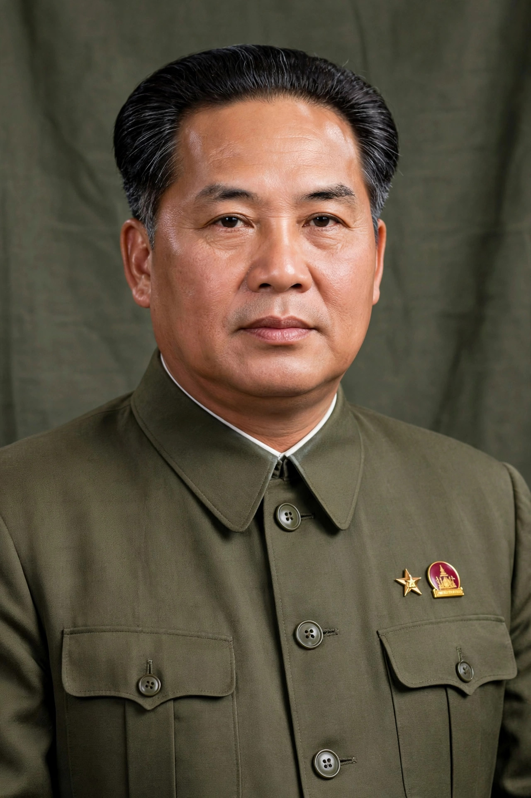

Kaysone Phomvihane
| Kaysone Phomvihane | |
|---|---|
| Born | 13 December 1920, Savannakhet |
| Died | 21 November 1992, Vientiane |
| Office | Prime Minister (1975–1991); President (1991–1992) |
| Party | Lao People's Revolutionary Party |
Kaysone Phomvihane (1920–1992) was the founding leader of the Lao People's Revolutionary Party and the effective ruler of Laos from 1975 until his death. He served as prime minister from 1975 to 1991 and president from 1991 to 1992.

1. Early life
2. Revolutionary career
3. Rule of Laos
4. Legacy
Early life
Born in Savannakhet to a Vietnamese father and Lao mother, Kaysone studied in Hanoi and joined the Viet Minh during the anti-French resistance. He was a founding member of the Lao People's Party in 1955, later renamed the Lao People's Revolutionary Party.
Revolutionary career
Kaysone was the real military and political strategist of the Pathet Lao, while Prince Souphanouvong served as its public figurehead. He maintained close ties with North Vietnam throughout the Laotian Civil War.
Rule of Laos
After 1975 Kaysone presided over collectivisation and the re-education camps of the early revolutionary years. In 1986 he launched the Chintanakan Mai ("New Thinking") reforms, Laos's analogue of doi moi and perestroika, introducing market mechanisms while retaining one-party rule.
Legacy
Kaysone remains the most venerated figure in modern Laos; his image appears on currency and his memorial museum stands in Vientiane. The capital's main thoroughfare was renamed Kaysone Phomvihane Road in his honour.
See also: Souphanouvong · Pathet Lao · Laos